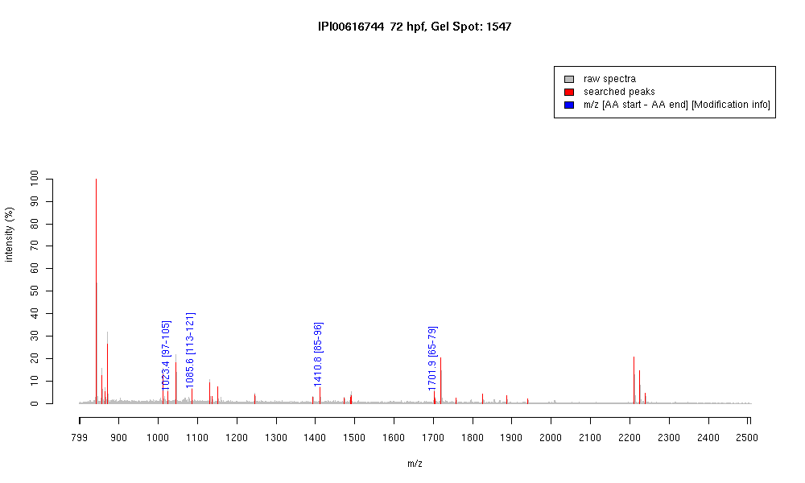

| Name | PREDICTED: similar to alpha tubulinsubunit isoform 4 |
|---|---|
| MW | 32543.6 |
| PI | 4.57 |
| Mascot Protein Score | 95 |
| Masses (matched / unmatched) | 4 / 34 |

| Peptide | MZ (calc) | MZ (observed) | Error (DA) | Error (PPM) | Start | Stop | Modifications |
|---|---|---|---|---|---|---|---|
| EDAANNYAR | 1023.449 | 1023.4493 | 0.0003 | 0 | 97 | 105 | |
| EIIDLVLDR | 1085.6201 | 1085.61 | -0.0101 | -9 | 113 | 121 | |
| QLFHPEQLITGK | 1410.7739 | 1410.7708 | -0.0031 | -2 | 85 | 96 | |
| AVFVDLEPTVIDEVR | 1701.9058 | 1701.8997 | -0.0061 | -4 | 65 | 79 |